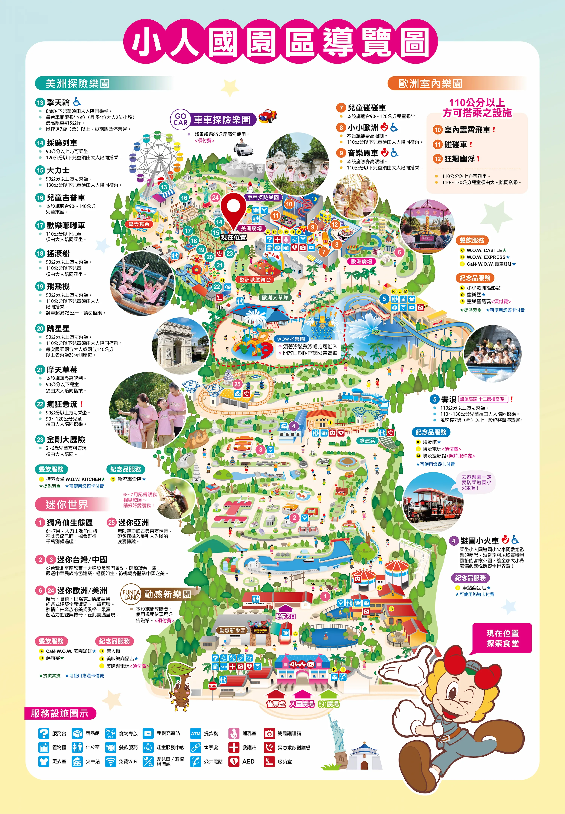

<div class="app-layout">

  <div class="map-wrapper">
    <div class="map-container" id="mapContainer">
      
    </div>
    
    <div class="zoom-controls">
      <button onclick="zoomIn()" aria-label="放大地圖">＋</button>
      <button onclick="zoomOut()" aria-label="縮小地圖">－</button>
    </div>
  </div>

  <nav class="bottom-nav">
    <a href="https://wow.com.tw/tw/about/features.aspx?kind=28" target="_blank">遊世界</a>
    <a href="https://wow.com.tw/tw/about/features.aspx?kind=29" target="_blank">遊樂園</a>
    <a href="https://www.facebook.com/wow.themepark" target="_blank">Facebook</a>
    <a href="https://www.instagram.com/wow.themepark/" target="_blank">IG</a>
    <a href="https://www.youtube.com/channel/UCotlEpo1eWzJytglZjp7yEQ" target="_blank">YouTube</a>
  </nav>

</div>

<style>
  /* --- 版面重置與基礎設定 --- */
  body, html {
    margin: 0;
    padding: 0;
    width: 100%;
    height: 100%;
    overflow: hidden; /* 禁止全網頁捲動，捲動交給地圖容器 */
    font-family: -apple-system, BlinkMacSystemFont, "Segoe UI", Roboto, "Helvetica Neue", Arial, sans-serif;
  }

  .app-layout {
    display: flex;
    flex-direction: column;
    height: 100vh;
  }

  .map-wrapper {
    position: relative;
    width: 100%;
    flex: 1; /* 佔滿剩餘空間，扣除下方導覽列 */
    overflow: hidden;
  }

  /* --- 地圖捲動區域 --- */
  .map-container {
    width: 100%;
    height: 100%;
    overflow: auto;
    background-color: #fcebd1;
    scroll-behavior: smooth;
    -webkit-overflow-scrolling: touch; /* 讓 iOS 滑動更順暢 */
  }

  #park-map {
    width: 250%; /* 初始放大倍率 */
    max-width: none;
    display: block;
    transform-origin: 0 0;
  }

  /* --- 浮動縮放按鈕樣式 --- */
  .zoom-controls {
    position: absolute;
    bottom: 20px;
    right: 20px;
    display: flex;
    flex-direction: column;
    gap: 12px;
    z-index: 10;
  }

  .zoom-controls button {
    width: 48px;
    height: 48px;
    border-radius: 50%;
    border: none;
    background-color: rgba(255, 255, 255, 0.95);
    box-shadow: 0 4px 10px rgba(0,0,0,0.2);
    font-size: 24px;
    font-weight: bold;
    color: #333;
    cursor: pointer;
    display: flex;
    align-items: center;
    justify-content: center;
    outline: none;
    -webkit-tap-highlight-color: transparent;
  }

  .zoom-controls button:active {
    background-color: #eee;
    transform: scale(0.95);
  }

  /* --- 底部導覽列樣式 --- */
  .bottom-nav {
    height: 60px;
    background-color: #ffffff;
    border-top: 1px solid #ddd;
    display: flex;
    justify-content: space-around;
    align-items: center;
    box-shadow: 0 -2px 10px rgba(0,0,0,0.05);
    z-index: 100;
  }

  .bottom-nav a {
    text-decoration: none;
    color: #555;
    font-size: 13px;
    font-weight: bold;
    text-align: center;
    flex: 1;
    padding: 10px 0;
  }

  /* 品牌標示色 */
  .bottom-nav a:active, .bottom-nav a:hover {
    color: #e60012; 
  }
</style>

<script>
  const container = document.getElementById('mapContainer');
  const img = document.getElementById('park-map');

  // 縮放設定值
  let currentZoom = 250; 
  const minZoom = 100; // 縮小下限 100%，呈現完整地圖
  const maxZoom = 450; // 放大上限 450%
  const step = 50;     // 每次點擊的增減幅度

  // --- 1. 初始進入頁面自動定位至 Map_N / Map_F 座標 (43%, 29%) ---
  window.onload = function() {
    setTimeout(() => {
      centerToCoordinates(0.43, 0.29);
    }, 300);
  };

  // --- 2. 縮放邏輯實作 ---
  function zoomIn() {
    if (currentZoom < maxZoom) {
      currentZoom += step;
      updateMapZoom();
    }
  }

  function zoomOut() {
    if (currentZoom > minZoom) {
      currentZoom -= step;
      updateMapZoom();
    }
  }

  function updateMapZoom() {
    // 記錄縮放前的中心比例，確保放大/縮小時地圖不會亂跑
    const centerX = (container.scrollLeft + container.clientWidth / 2) / img.clientWidth;
    const centerY = (container.scrollTop + container.clientHeight / 2) / img.clientHeight;

    // 暫時關閉平滑捲動，讓座標重算時視覺更精準俐落
    container.style.scrollBehavior = 'auto';
    
    // 更新圖片寬度
    img.style.width = currentZoom + '%';

    // 重新計算對應的新座標並移動
    const newX = (img.clientWidth * centerX) - (container.clientWidth / 2);
    const newY = (img.clientHeight * centerY) - (container.clientHeight / 2);
    
    container.scrollTo(newX, newY);
    
    // 瞬間完成後恢復平滑捲動屬性
    setTimeout(() => {
      container.style.scrollBehavior = 'smooth';
    }, 50);
  }

  // --- 3. 自動置中輔助函數 ---
  function centerToCoordinates(pctX, pctY) {
    const targetX = (img.clientWidth * pctX) - (container.clientWidth / 2);
    const targetY = (img.clientHeight * pctY) - (container.clientHeight / 2);
    container.scrollTo({
      left: targetX,
      top: targetY,
      behavior: 'smooth'
    });
  }
</script>
